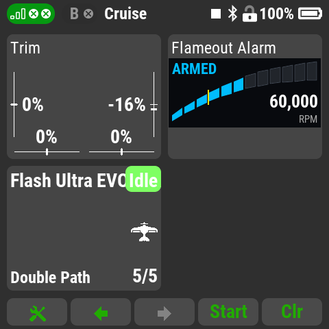
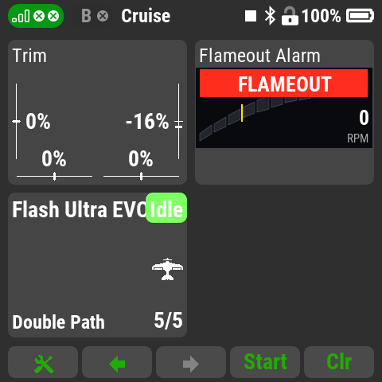

Flameout Alarm
An urgent, repeating alarm when a turbine flames out, from the
engine's RPM telemetry, and an RPM bar for the main screen, for the
DS-24 II / DC-24 II.

- Flameout alarm: "Flameout! Flameout! Flameout!" and a
rapid lock tone every 5 seconds, with stick vibration. It cuts in
over other apps' speech.
- No false alarms on the ground: arms only once the
engine has run at idle, ignores the start sequence and throttle
chops, and disarms silently on the throttle cut switch.
- Auto-restart aware: the alarm keeps going during an ECU
restart and clears once the engine holds idle again.
- Telemetry loss is not a flameout: you hear "Engine
telemetry lost" instead.
- RPM window: a segmented RPM bar with an idle marker and
the RPM number; a red FLAMEOUT banner on a flameout.
- Test alarm switch to hear the real alarm on the
ground.

Advisory only. It never controls the model or the engine,
and does not replace the ECU's failsafe, shutdown or auto-restart
logic, or your own monitoring.
Needs a turbine whose RPM reaches the transmitter as a normal
telemetry sensor: JetCat, Xicoy and KingTech through their Jeti
telemetry adapters or a VSpeak/Digitech converter, Swiwin through
VSpeak's converter. JetCentral, Enjet and Swiwin's direct connection
are unconfirmed.
Setting up
- Add Flameout Alarm in Applications - User Applications.
- In its settings choose the RPM sensor (check Live
RPM; set Sensor scale if it's off by 10x or 1000x),
enter Idle RPM in thousands from your ECU's setup (35.0 =
35,000 RPM), assign the Cut switch in its Cut position, then
tick Monitoring.
- Put Flameout Alarm at double size on a page in
Timers/Sensors - Displayed telemetry.
- Optional: assign a Test alarm switch to hear the
alarm.
Defaults: arms at 90% of idle held for 3 s, alarms below 70% of
idle for 1 s, "telemetry lost" after 2 s.
Version: 0.1.0
Compatibility: DC/DS-24II, firmware 6.x
Voice: Piper text-to-speech with the "Amy" voice by Mycroft /
Rhasspy; the sound files are licensed CC BY-SA 4.0. Flameout Alarm: MIT
license, Copyright (c) 2026 Aaron George.
Source and full credits:
github.com/Flazzarious/jeti-lua-apps